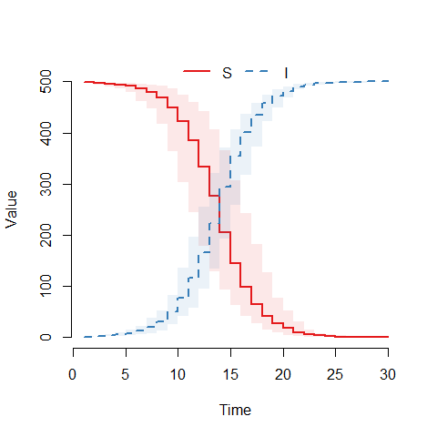
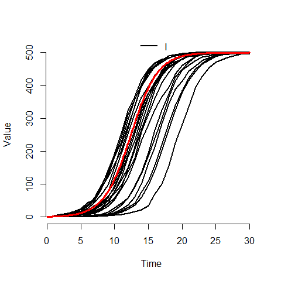
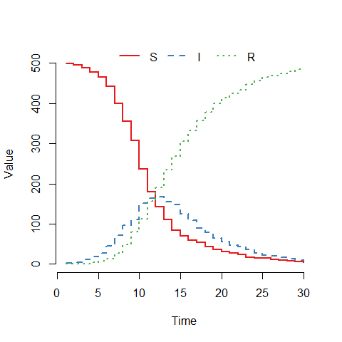
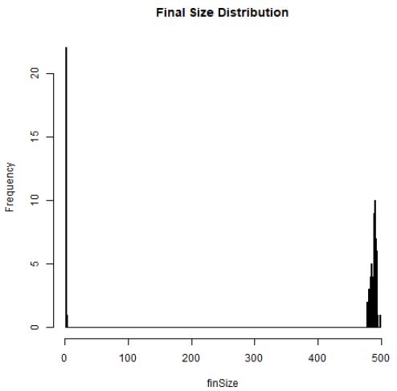

7 Epidemic models - P3
Stochastic models
Aim: To explore the effects of stochasticity on simple SI and SIR models and contrast their behaviour with previous deterministic results.
Goals:
By the end of this practical participants should be able to achieve the following:
- Code up a simple stochastic SI model in R using the
SimInfpackage - Code up a simple stochastic SIR model in R using the
SimInfpackage - Run both single and multiple realisations and visualise the results
- Explore extensions to both SI and SIR models
- Expand the SI model to include additional transitions
- Understand the impact of R0 values on stochastic extinction
Background: This practical follows on from the Stochastic Epidemic Models Lecture 5 and echoes the content presented there.
7.1 Coding a simple SI model
We will first implement a slight modification to the code that has been presented to you in the previous Stochastic Epidemic Lecture (Epidemics L5). The key difference between the code presented in the lecture and the code shown here is that we are putting the code into a function (called StocSI.dyn) rather than just running a series of commands.
- Open Rstudio
- Open a new blank script file
- Save it as
Stock_SI.R
If you haven’t already instealled the package SimInf:
- Click packages tab in lower right sub-window
- Click Install
- Type:
SimInfin the Packages box - Click Install
If you’re on a Windows computer then you’ll need to do some additional work to use SimInf (macOs and Linux users should be fine)
- Download Rtools from https://cran.r-project.org/bin/windows/Rtools/
- Click on the appropriate version of RTools on the left
- For RTools 4.2 (the most up to date version) click on the link
Rtools42_installer. It’s in the third paragraph down in the second section - Once it’s downloaded install it using all of the default settings
- This might take a couple of minutes, but click Finish when it’s done
- Add the path to Rtools to your PATH environment variable
- Click on the windows icon in the bottom right of the screen
- Type environment variable in the search box
- This should bring up the System Properties window. Click on the Environment Variables button
- Select on the Path row in the second table (entitled System Variables) and click Edit…
- Click New
- Type
C:\Rtools\bin - Click OK on all windows
Great!
Now we can finally actually get on with the simulations.
In the script window type the following commands:
require(SimInf)
create.StocSI <- function(N, I0, beta , f_time) {
initial_state <- data.frame(S = N-I0 , I = I0)
compartments <- c("S", "I")
transitions <- c("S -> beta*S*I/(S+I) -> I")
tspan <- seq(from = 1, to = f_time, by = 1)
model <- mparse(transitions = transitions, compartments = compartments, gdata = c(beta = beta), u0 = initial_state, tspan = tspan)
return(model)
}Make sure you save your file and that your working directory is the same as the folder you have saved this into (Choose from menu Session > Set Working Directory > To Source File Location).
This code creates a function that creates a single stochastic SI model. We’ll dissect/explain the code in the next section.
Open a new blank script file.
Save it as Epi_P3.R
We’ll use this script to record all of the steps in this practical (unless otherwise indicated).
In the script window type the following commands and then run (select and press run button in RStudio):
source('Stoch_SI.R')
SImodel <- create.StocSI(500, 1, 0.5, 30)
out <- run(model = SImodel)
plot(out)You should see a graph that looks similar to this:

Here we can see the two trajectories for an SI epidemic. The susceptible curve (red) starts at 499 and stochastically decreases down whilst the infected curve (blue) starts at 1 and mirrors the S curve increasing stochastically.
7.2 Dissecting the stochastic SI code
The function we have just created is a wrapper that takes the basic parameters that define the SI model for a particular population and creates a R object that the SimInf package can use to simulate the model. Our function create.StocSI takes four inputs:
- Total population size: N
- Initial number of infected: I0
- Infection rate: beta
- Time to simulate for: f_time
Inside the function we combine this information to create four R objects that when passed to the SimInf function mparse. The output from the mparse function is returned as the output to our create.StocSI function.
Here we will break down what we have just written and explain what is required for the mparse function.
SimInf package includes its own function that defines SIR, SEIR and SIS models (of which the SI model is a special case). The mparse function can define any generic compartmental model so it is worth learning about…
The mparse function requires that you specify the following information:
- The list of all compartments of the system
- The initial states (or compartments) of the system
- the events (or transitions) of the system
- the values of any parameters
- the time points where the value of each state is to be recorded for each simulation
An SI model is described by the following system of differential equations:
\[\frac{dS}{dt} = -\beta\frac{SI}{N}\] \[\frac{dI}{dt} = \beta\frac{SI}{N}\]
And from these equations we can derive a transition diagram from the system:
\[ S \rightarrow \beta\frac{SI}{N} \rightarrow I\]
- From this diagram we can see that there are two states for this system: susceptible and infected (S & I). We define all of the compartments of the model using a vector:
compartments <- c("S","I")- In order to begin the simulation, we need to specify the initial values of each compartment. We specify these using a data frame with a single row and column for each compartment specified above:
initial_state <- data.frame(S = N-I0, I = I0)where N (the total population number) and I0 (the initial number of infected) have been specified by the user.
- There is one event (or transition): infection.
transitions <- c("S -> beta*S*I/(S+I) -> I")where the effect is to move one susceptible into the infected compartment at a rate \(\beta \frac{SI}{N}\) where \(N=S+I\) and beta must be specified by the user. The syntax we use here should be self-explanatory (hopefully) but the idea is that we have the following syntax “A \(\rightarrow\) rate \(\rightarrow\) B” where A is the name of the starting compartment, B is the name of the ending compartment and rate explains how to calculate the rate.
- We must tell algorithm how long we want it to run for before stopping and at what points we wish to record the value of the compartments. We use the user specified variable
f_timeto specify a sequence of daily output values up to a maximum value off_time.
tspan <- seq(from = 1, to = f_time, by = 1)NB: SimInf was designed to work with real epidemiological data and as such the minimum output timestep size is 1 (corresponding to 1 day).
The
mparsefunction takes the arguments we’ve just created, processes (‘parses’) them into a low-level computer language and compiles the resulting program into machine code. This machine code is considerably (orders of magnitude) faster than the equivalent R code. We assign the output of this function to the objectSImodel(An object in R is a special data type that combines functions with data).Objects can be used as arguments to functions in the same way as normal data types. In this case we can use the
run()function to run a stochastic simulation of theSImodel:
out <- run(model = SImodel, threads = 1)The threads argument is optional here, but this argument would allow us to parallelise our code (if our setup allows it).
The run function implements (and runs) the stochastic simulation algorithm for any stochastic model defined by the
mparsefunction and returns a new object which contains the output of the simulation (which we’ve called out).The
SimInfpackage provides a special plot function for this output
plot(out)This explains the code you’ve produced so far, but there are limitations. We would like to plot multiple stochastic realisations onto a single plot and investigate their aggregated properties. To do this we will need to modify our code somewhat.
7.3 Performing Multiple Simulations
Let’s update our create.StocSI function in the (Stoch_SI.R file) to create a model with multiple copies of the same population. This is the simplest possible meta-population model where there is no interaction between patches, and a neat hack to run multiple replicate simulations at the same time.
Edit Stoch_SI.R to update the definition of the create.StocSI as follows:
create.StocSI <- function(N, I0, beta, f_time, reps = 1) {
initial_state <- data.frame(S = rep(N-I0, reps) , I = rep(I0, reps))
compartments <- c("S", "I")
transitions <- c("S -> beta*S*I/(S+I) -> I")
tspan <- seq(from = 1, to = f_time, by = 1)
model <- mparse(transitions = transitions, compartments = compartments, gdata = c(beta = beta), u0 = initial_state, tspan = tspan)
return(model)
}The only two things we’ve changed here are:
We’ve created a new argument call
repswhich we’re using to specify the number of simulations that we want the code to run.We’ve changed how we specify the
initial_statedataframe. This is now a dataframe that hasrepsnumber of rows and 2 columns. The first column contains the starting number of susceptible individuals in each of our simulations, and the second column contains the number of initial infected individuals.
Again, remember to save your file.
create.StocSI which has a default value reps\(=1\). By adding the argument in this way we ensure that any code we wrote earlier assuming only one replicate would still work with no modifications.
Type in the following code into Epi_P3.R and run:
#Multiple replicates
source('Stoch_SI.R')
SImodel <- create.StocSI(500, 1, 0.5, 30, 20)
out <- run(model = SImodel)
plot(out)This should produce a plot that looks similar to the following:

By default the plot command will always:
plot the curves for all states on the same graph (so we can see both S and I curves here)
use a step function to plot the curves (which is why it’s a bit, um, step-y)
show the average and interquartile range as a transparent envelope when multiple simulations have been run.
If we want to actually see individual realisations, we need to use some of the other arguments to the plot function. Try typing this in:
plot(out , 'I', range=FALSE , type = 'l')This should produce a plot that look similar to the following:

- The second argument is a character vector specifying which compartments we want to see. Here we’ve asked to only see the curves for the infected I compartment.
- The named argument
rangeis used to specify the shaded quantile on the plot. By specifyingFALSE, we’ve turned it off and forced R to plot the individual trajectories instead. If we’d specified a numeric value between 0 and 1 then we would see the equivalent shaded range plotted instead (i.e. \(range=0.5\) corresponds to plotting the interquartile range and \(range = 0.95\) corresponds to plotting the wider 95% quantiles) - We can use the standard
typeargument from the base R plot function to specify the type of curve we want. The default istype='s'for steps, but here we’re asking for the smoothertype='l'lines option.
7.3.1 Adding the deterministic solution curve
There will be an R script file called Det_SI.R on the shared drive (your demonstrator will know where). It contains the code for a deterministic SI model based upon the code you encountered in the first epidemic models practical. It is specifically designed to use the same parameters as have been used in the stochastic SI code written above and will add a deterministic trajectory to your plot.
Type in the following:
#Adding a deterministic trajectory
source('Det_SI.r')
det.sol <- DetSI.dyn(500, 1, 0.5, 30)
det.t <- det.sol[,1]
det.I <- det.sol[,3]
lines(det.t, det.I, lwd=3 , col='red')
7.4 Exploring the effects of Stochasticity
Exercise 1
Modify the above code to explore the effects of different initial conditions ($I_{0}$ = 1, 5, 10, 50, 100) on the stochastic replicates. Keep the total population size constant (\(N=500\)).
Exercise 2
Now vary the population size (N = 50, 500, 5000) with \(I_{0} = 1\).
Exercise 3
Now vary the infection rate \((\beta = 0.1, 0.5, 1)\).
Qualitatively what effect does this have on the variability between replicates?7.5 The delay time
Graphical exploration of model output is a good way to orientate yourself and understand the qualitative impact of changing parameters, but in practice we do need to explore various summary statistics. In this section we will compare the time it takes for a stochastic epidemic to infect half of the total population, \(t_{\frac{1}{2}}\), with the time a deterministic epidemic takes. This difference is the delay time, \(\delta t\) (see the figure below).

We will repeat this for many stochastic replicates and plot a distribution of the delay times.
7.5.1 The deterministic half-time
The deterministic model predicts a constant value of \(t_{\frac{1}{2}}\) given by the expression:
\[t_{\frac{1}{2}} = -\frac{1}{\beta}ln\frac{I_{0}}{N-I_{0}}\]
(This can be derived exactly from the analytic solution to the system of differential equations for the SI system. This isn’t going to be possible for more complex models).
7.5.2 The stochastic half-time
We must now construct a function that calculates the value of \(t_{\frac{1}{2}}\) for a set of stochastic simulations and the corresponding delay times:
Open a new script file and save as Half_time.R with the following content:
# Deterministic Halftime Function
det_halftime <- function(N, I0, beta) {
# calculate deterministic half life
return((-1/beta)*log(I0/(N-I0)))
}
# Stochastic Halftime Function
stoc_halftime <- function(model) {
no_runs = n_nodes(model)
N = sum(model@u0[,1])
# create storage vector for stochastic half lives
thalf <- numeric(no_runs)
# loop over number of replicates
for (iSim in 1:no_runs) {
# extract the infected time series for each simulation
output <- trajectory(out, "I", iSim)
# find the first time when the infected population is at least half the total population
ind <- min(which(output$I>=(N/2)))
thalf[iSim] <- output$time[ind]
}
return(thalf)
}The function det_halftime takes three arguments:
- The total host population N
- The initial number of infected I0
- The infection rate beta
and returns the deterministic value of the time to half-height.
The function stoc_halftime takes a SimInf model object as its input and returns a vector with the time to half height of each model simulation (to nearest day)
We then plot a probability density plot for these delay times using the in-built function density.
source('Half_time.R')
SImodel <- create.StocSI(500, 1, 0.5, 30, 100)
out <- run(model = SImodel)
delay_times <- stoc_halftime(out) - det_halftime(500, 1, 0.5)
plot(density(delay_times), main = '')density produces smoothed estimates of the frequency distributions of a set of samples (essentially a smooth line through the top of a histogram). This will produce a figure similar to the one below:

Exercise
Can the distribution of delay-times be used to quantify the appropriateness of the deterministic approximation for a given set of parameters? In particular, in what limits will the deterministic model produce useful predictions for the time-scale of an SI epidemic? You may wish to revisit the impact of changing the host-population size N, initial number of infectives \(I_{0}\) and infection rate. Produce plots to justify your reasoning and discuss them with a demonstrator.7.6 Coding a simple SIR model
Using the results from the earlier section on SI models as a starting point we will construct a stochastic SIR model. The deterministic SIR model equations are given by
\[\frac{dS}{dt} = -\beta\frac{SI}{N}\] \[\frac{dI}{dt} = \beta\frac{SI}{N}-\mu I\] \[\frac{dR}{dt} = \mu I\]
7.6.1 Exercise one
- Using these equations construct a transition diagram for the system
- What are the states/compartments for this system?
- What are the transitions events and what are the rates associated with each event?
- What is the initial state of the system (i.e. how many individuals should be in each compartment initially)?
One a new script in RStudio.
Using the functions developed in the previous sections as a template construct a create.StocSIR function that takes five arguments:
- N: the total population size
- I0: the initial number of infected individuals
- beta: the infection rate
- mu: the recovery rate
- f_time: the time the simulation will run for (daily steps)
- reps: the number of replicate simulations to run
The skeleton function below can serve as a starting point.
create.StocSIR <- function(N, I0, beta, mu, f_time, reps = 1) {
initial_state <-
compartments <-
transitions <-
tspan <-
model <- mparse(transitions = transitions,
compartments = compartments,
gdata = c(beta = beta, mu = mu),
u0 = initial_state,
tspan = tspan)
return(model)
}To specify multiple transitions in the SimInf algorithm you will need a transitions vector with two elements to it like this:
tansitions <- c('S -> ?? -> I', 'I -> ?? -> R')Using your function run the following code:
SIRmodel <- create.StocSIR(500, 1, 1, 0.25, 30)
out <- run(model = SIRmodel)
plot(out)This should produce a graph that looks like this:

However, some of you will see a very different graph. (If you do get something like this plot then try rerunning the model and plotting it several times until you see something different.)
Why might this be the case?

7.7 SIS Extension: Adding Recovery from Infection
Consider a system where individuals recover from infection with a fixed rate \(\alpha\) and return to the susceptible class. This SIS system is described by the following system of equations:
\[\begin{aligned} \frac{dS}{dt} &= \alpha I - \beta\frac{SI}{N} \\ \frac{dI}{dt} &= \beta\frac{SI}{N} - \alpha I \end{aligned}\]
Draw the transition diagram for this system.
For each transition write down the rate at which it occurs.
What are the parameters required for this model?
Write a new function
create.StocSISbased upon thecreate.StocSIfunction and add to theStoch_SI.Rfile and repeat the above analysis.
7.8 SIS Extension: Adding host demography
Consider an SI model with host demography. The system has constant birth rate \(\Lambda\) into the susceptible class and fixed per capita mortality rate \(\mu\) from both the susceptible and infectious classes and is governed by the following equations:
\[\frac{dS}{dt} = \Lambda - \beta\frac{SI}{N} - \mu S\] \[\frac{dI}{dt} = \beta\frac{SI}{N}-\mu I\]
create.StocSI_demo function in Stoch_SI.R and then explore its dynamics.
- To specify a birth (or death) event then we use the @ symbol to represent the “empty” compartment from which births appear (or to which deaths end up). So a birth event into the susceptible compartment would have the following transition string:
'@ -> ?? -> S'- Use these initial values for the parameters:
- alpha \(= 0.1\)
- beta \(=0.5\)
- lambda \(=100\)
7.9 SIR Extension: The final epidemic size
In order to further explore the effects of stochasticity in the SIR model we are going to explore the how the final size of an epidemic varies between realisations.
7.9.1 Exercise one
- What is the final size of an epidemic?
- What does it mean?
- Which state variable do we need to consider in order to calculate the final epidemic size?
7.9.2 Exercise two
SimInf output object.
- What value should the final time for the simulations be set to (roughly)?
- As we’ve seen before, the function
trajectorycan be used to extract the actual values of the different compartments at each time point. - Look at the code we used in the previous practical for calculating the halftime values for a single simulation and modify that logic accordingly.
7.9.3 Exercise three
Run 100 realisations, extract the final epidemic size from each one and then produce a histogram of the final sizes. It should look something similar to the figure below:
- You’ll probably want to use a loop to extract the final size for each simulation
- Set the histogram to use 500 bins
Why does the histogram have a bimodal distribution?
7.9.4 Exercise four
Recall that the final epidemic size for the deterministic SIR model showed strong dependency on the value of the basic reproductive number, \(R_{0}\).
- Write down an expression for \(R_{0}\) for this system as a function of the parameters \(\beta\) and \(\mu\).
- Does this help explain the bimodal result?
7.9.5 Exercise five
For this section, we shall vary the value of \(R_{0}\) by varying the transmission rate, \(\beta\), whilst keeping the recovery rate, \(\mu\), at a fixed value.
Explore how the final size distribution varies with R0 by producing histograms of the final size distribution as per the above figure for values of \(R_{0} = 20.0\), \(5.0\), \(2.0\), \(1.2\), \(1.0\), \(0.9\), \(0.5\).
Can you always identify the two modes of the distribution?7.10 SIR Extension: Stochastic extinction
One of the primary differences between the deterministic and stochastic formulations of the SIR model is that in the stochastic formulation the epidemic becomes extinct within a finite time, the so-called extinction time. The extinction time varies between realisations and in this section we are going to explore this distribution.
7.10.1 Question
Which state variable do we need to consider in order to calculate the time to epidemic extinction and what is the value of this state variable at extinction?
7.10.2 Exercise one
As with the final epidemic size, the extinction time will vary over realisations of the epidemic which will result in a distribution of extinction times, which we are now going to explore.
Adapt your previous code to calculate the extinction time for each realisation.
- What value should the final time for the simulation be set to?
- Run 100 realisations in order to produce a histogram of the time to extinction, as per the figure below:

Explore the distribution of extinction times for several values of \(R_{0} = 20.0\), \(5.0\), \(2.0\), \(1.2\), \(1.0\), \(0.9\), \(0.5\).
What do you notice about the distribution as \(R_{0}\) gets close to 1?